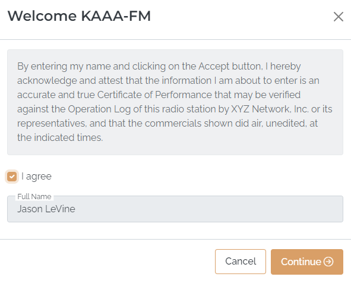

Posting Affidavits
Affidavits are posted after airing on the Posting Screen. The Posting Screen is accessed by pressing the “Post Affidavits” button on the Main Menu.
After pressing the “Post Affidavits” button, the Affidavit Citation page will appear. On this popup, the station user will be asked to agree to the Citation text from the Citation tab from the Network Admin Settings page.

The station user's first and last name will be automatically filled in and retained during posting. To proceed to the Posting Screen, the user must check on "I agree" and press Continue.
After agreeing to the Citation text, users can either select "View Entire Week" to access the entire week, or press "View Days" and then "Post Affidavits" to post a specific day of the week.
Color coding is used to indicate logs/affidavits that are outstanding (have not been posted at all), partially completed (have at least one spot posted but not all spots), or completed (all spots are fully posted).
For sports vehicles, events can only be posted individually. Each week will have a "View Days" button, which can be clicked on to see the events for that week. Press the Post Affidavits button for an event to access the Posting Screen for that event.
Posting Screen Overview
After selecting the week or the individual day to post, the Posting Screen will appear.
Posting Screen Buttons
The following buttons are available for use on this page:
- Assign Makegoods: If makegoods are enabled for this vehicle, the “Assign Makegoods” button can be used to create makegoods from missed spots.
- All/Posted/Unposted: This dropdown allows users to switch between seeing all spots, posted spots only, or unposted spots only. The default is "all". Posted spots are shown with a green background, and unposted spots are shown with a red background.
- Dates: This is a button that both shows the date range being viewed, and can be clicked on to change the date range.
- All Aired: Sets the aired status to “Yes” for any spot that had not been previously updated.
- This button will be labeled "All Aired as Pledged" when the "Avail Name" feature is enabled for the vehicle.
- None Aired: Sets the aired status to “No” for any spot that had not been previously updated.
- Submit Posts: This button is used to post and save any changes that have been made.
The icons along the top of the grid show what the different color coding and icons indicate.
Spot Information
The following information is shown for each spot:
- Advertiser/Product: The name of the advertiser and the product.
- ISCI code: The unique identification code for the copy.
- Comment: If a copy instruction comment is available, a “speech bubble” icon will appear in the “C” column. Click the icon to see the comment, or hold the mouse over the icon to see the comment. (This comment will also appear on the log and the printed log.)
- Length: The length (in seconds) of the spot.
- Aired?: This field is used to mark whether the spot aired or not.
- MR: Missed Reason. When a spot has been missed, the missed reason will be visible in this field (if Missed Reasons are enabled).
- MG: Makegood. If the spot is a makegood, it will be indicated here.
- Pledge Date: The date the spot is pledged to air.
- Pledge Time: The time the spot is pledged to air.
- Air Date: The date the spot aired (this cannot be changed here unless the web makegood feature is deactivated for the vehicle).
- Air Time: This field is used to enter the time the spot actually aired.
Posting Screen Actions
The following main actions can be performed on the Affidavit screen:
- Edit the Aired status for a spot to mark whether a spot aired or didn’t air by clicking the "Yes" or "No" radio button from the "Aired" column, or by pressing the “All Aired” or “None Aired” buttons.
- Edit the Air Time for a spot so that the affidavit has the correct air time for each spot.
- Create makegoods from missed spots by using the “Assign Makegoods” button (when Makegoods are enabled).
- Mark the spots as posted by pressing the Submit Posts button. Once an affidavit has been fully posted – that is, all the spots have been updated and posted – the affidavit will be marked as ready to be returned to the network and the airing information will be imported the next time the web import is run once the affidavit week is entirely in the past.
When the Affiliate Site Options setting “Allow posting on today and future days” is not checked on, then spots pledged to air today or in the future cannot be posted. The "Aired" field and "Air Date" and "Air Time" field will be unavailable.